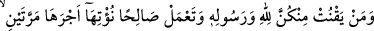

hicâb (senden perdelenme) zilleti ile bana azab etme!” diye duâ etmesi buradandır.
“Bu” Yâni onlar için azâbı ikiye katlamak halkın aksine “Allâh’a göre kolaydır.”
Çünkü halkın azabı katlaması kolay değildir. Çünkü onlar bundan dolayı yorulur ve bu
onlara zor gelir.”
Allah, bizi de sizi azabdan korusun ve bol sevabla şereflendirsin.
Tevekkülün olmaması, ele geçip ulaşana kanâati terk etmek ve semeresiz işlerin
peşinde koşmak, azâbın ve tenezzülün/mânevî düşüşün sebeplerindendir.
Abdülvâhid b. Zeyd şöyle demiştir: “Üç gece Allah’tan bana cennetteki arkadaşımı
göstermesini istedim. Bana: “Ey Abdülvâhid! Senin cennetteki arkadaşın Meymûnetü’s-
Sevdâ (Kara Meymûne)’dir.” denildi. Ben: “O nerededir?” diye sordum. Bana:
“Kûfe’de falanca oğulları arasındadır.” denildi. Hemen çıkıp Kûfe’ye vardım ve onu
sordum. Bana: “O, birkaç koyuncuğu otlatan bir mecnûnedir.” dediler. “Ben onu görmek
istiyorum.” dedim. Bana: “Öyleyse musallâya git.” dediler. Musallaya vardım, bir de ne
göreyim o durmuş namaz kılıyor. Önünde bir değnek, kendi üzerinde de “Satılamaz ve
satın alınamaz” yazan yün bir elbise vardı. Bir de baktım koyunlar kurtlarla otluyor. Ne
kurtlar koyunları yiyordu, ne de koyunlar kurtlardan korkuyordu.
Beni görünce namazı kısa kesip selam verdi. Sonra: “Ey İbn Zeyd dön, git! Buluşma
yerimiz burası (dünyâ) değil orası (cennette).” dedi. Ben: “Allah sana rahmet etsin,
benim İbn Zeyd olduğumu nereden biliyorsun?” dedim. Şöyle cevap verdi: “Bilmez
misin ki ruhlar toplanmış/düzenli ordulardır. Ruhlar âleminde tanışıp kaynaşanlar bu
âlemde de tanışıp kaynaşırlar. Ruhlar âleminde tanışmayanlar da burada ihtilaf
ederler.”[200] diye cevap verdi. Ona: “Bana öğüt ver.” dedim. O: “Hayret! Kendisi vâiz
olana öğüt verilecek öyle mi?” dedi ve devam etti:
“Bana şöyle bir haber ulaştı ki bir kula dünyâlık bir şey verilir de kul bir ikincisini
isterse Allah o kimseden kendisiyle halvet (baş başa kalma) sevgisini çekip alır, ona
yakınlıktan sonra uzaklık, ünsten/ünsiyetten sonra yalnızlık/yabancılık (vahşet) verir.
İşte bu sırdan dolayı Allah Teâlâ Kur’an’da Peygamberimiz’in (s.a.) temiz eşlerine öğüt
vermiştir. Bu Allâh’ın lütfundandır.
Sâib der ki:
Dervişliğin ayak tozunu gözüne sürme çekince,
Gözün padişahlıktaysa o bir toz kadar görünür.
Yani gözün ve gönlün cilâsı; devlet, saltanat ve fâni dünyâ nîmetlerinde değil fakr,
kanâat ve dünyâ ziynetini terk etmektedir. Çünkü dünyâ içindekilerle birlikte keder ve
tasadır. Öyleyse akıllı kimseye düşen, ağırlıkları ve günahları azaltmak, geçip giden
ömrünün son ânına kadar dünyâ sevgisinden arınıp temizlenmeye (tecerrüd) gayret
etmektir.